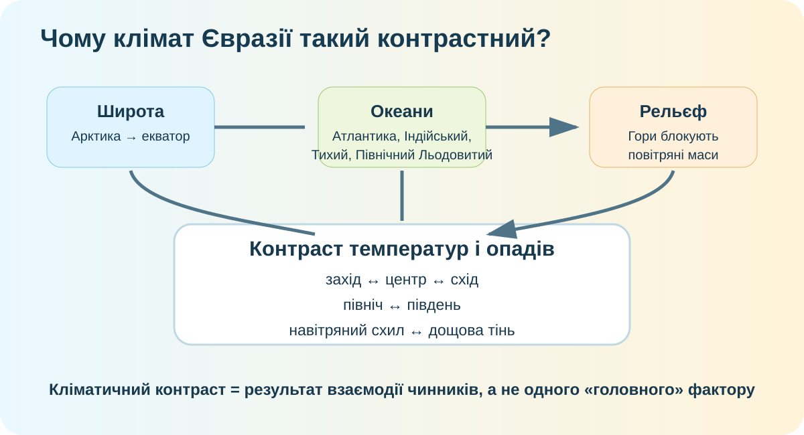

1. Гіпотеза — 3 хв
Чому в межах одного материка співіснують арктичний холод, пустелі Центральної Азії, вологі мусонні узбережжя й м’який клімат Західної Європи?
2. Просторова карта-доказ — 6 хв

Локальна модель для перевірки причинних зв’язків.
Маршрут: Лондон → Астана → Улан-Батор → Владивосток. Які два чинники змінюються найпомітніше із заходу на схід?
3. Дані замість вражень — 7 хв
Захід Європи
Океанічне повітря та західне перенесення пом’якшують температури й приносять вологу.
Центральна Азія
Велика віддаленість від океанів посилює континентальність.
Схід і південь
Мусонна циркуляція різко змінює сезонний напрям перенесення повітря.
Складне питання: чому твердження «чим далі від океану, тим сухіше» працює не завжди? Згадайте гори, панівні вітри й мусони.
4. Реальні кліматичні дані — 5 хв
Copernicus Climate Atlas
Порівняйте середню температуру й опади для Західної Європи, Центральної Азії та Східної Азії. Змініть змінну — не судіть клімат за однією картою.
Відкрити Copernicus Atlas ↗NASA Worldview
Подивіться хмарність над Індією та Гімалаями. Супутник показує стан атмосфери, але для висновку про клімат потрібні багаторічні дані.
NASA Worldview ↗Методологічна пастка: один супутниковий знімок показує клімат чи погоду? Поясніть, який доказ потрібен для кліматичного висновку.
5. Гори як кліматичний бар’єр — 4 хв
Гімалаї не просто «високі». Вони змінюють рух повітряних мас, опади й контрасти між навітряними та підвітряними районами.
Повітря піднімається, охолоджується, конденсується → опадів більше.
За гірським бар’єром повітря опускається й прогрівається → стає сухішим.
Доказове завдання: чому Тибетське нагір’я й внутрішні райони Азії не можна пояснити лише широтою?
6. Коротке відео з КТП — 3 хв
Після перегляду назвіть не факти, а три причинні механізми, які підтверджують вашу гіпотезу.
7. Ваш висновок → теорія — 3 хв
Теорія після дослідження
Клімат Євразії контрастний через поєднання кількох чинників. Материк простягається від арктичних до екваторіальних широт; його внутрішні райони дуже віддалені від океанів; західне перенесення, мусони й арктичні вторгнення створюють різні режими надходження повітря; великі гірські системи перерозподіляють вологу й формують дощові тіні. Тому кліматичні межі не повторюють просто паралелі чи берегову лінію.
8. CER — 4 хв
Claim: «Кліматичні контрасти Євразії не можна пояснити одним чинником». Наведіть три незалежні докази: один широтний, один океанічно-континентальний і один орографічний/циркуляційний.
9. Домашнє завдання
Опрацюйте §53. Створіть таблицю для 5 пунктів: Лондон, Якутськ, Улан-Батор, Мумбаї, Владивосток: широта → близькість океану → панівна циркуляція → роль рельєфу → очікувані риси клімату.
Електронний підручник ІМЗО ↗